성공사례
단편적인 법리를 넘어 사건의 본질을 꿰뚫는 입체적인 전략, 준일이기에 가능합니다.

전 여자친구가 통매음·모욕으로 고소했지만, 경찰단계에서 ‘혐의없음 불송치’ 받은 사례
이번 사건의 의뢰인 역시 과거 교제하던 여자친구로부터 통신매체이용음란 및 모욕 혐의로 고소당했습니다. 그러나 법률사무소 준일은 경찰조사 단계부터 동행하여 사건의 전체 흐름과 법리적 쟁점을 정리했고, 변호인의견서를 제출한 끝에 최종적으로 불송치, 혐의없음 결정을 이끌어냈습니다.
 한석일 대표변호사
한석일 대표변호사
[층간소음방화 1심 징역 2년 실형, 항소심 집행유예] 구치소 수감 중이던 남편, 항소심 집행유예 선처 사례 (층간소음, 현주건조물방화미수)
1심 징역 2년 실형 사안에서, '일반물건방화' 주장을 통한 예비적 공소사실 추가 유도 및 다각도의 양형 자료 수집으로 항소심에서 집행유예 선처를 받아냈습니다.
한석일 대표변호사
[이혼 조정 성공사례] 재산분할 3억 7천만 원 및 친권·양육권 방어 성공
상대방의 위자료 3,000만 원 청구를 방어하고, 재산분할금 3억 7,000만 원 및 두 자녀의 친권·양육권을 성공적으로 확보한 이혼 조정 성립 사례입니다.
한석일 대표변호사
[절도 무죄 확정] ] "CCTV 속 물체, 정말 피해자의 가방일까?" 검사 항소 기각시킨 사례
단편적인 정황 증거만으로 기소된 절도 사건을 1심부터 조력하여 무죄를 이끌어내고, 직접 변론한 2심에서 검사의 항소마저 기각시키며 의뢰인의 억울함을 끝까지 덜어드렸습니다.
한석일 대표변호사
[5년의 상속 분쟁] 아들에게 모든 재산을 남긴 아버지의 유언, 양보와 타협으로 이끌어낸 화해권고결정
5년간 이어진 상속재산분할 심판 방어 성공 사례. 대출 이자 등 경제적 손실이 가중되는 상황에서, 합리적인 조정을 통해 핵심 재산을 방어하고 향후 가족 간 법적 분쟁의 여지까지 확실하게 마무리했습니다
한석일 대표변호사
[고속도로 난폭운전 무혐의] 상향등 위협에 급제동했다가 억울하게 고소당한 사건, '불기소(혐의없음)' 성공 사례
고속도로 난폭운전 가해자로 몰려 처벌받을 위기에 처한 의뢰인을 위해, 블랙박스 영상의 정밀 분석과 예리한 법리적 방어를 통해 억울함을 풀고 '무혐의'를 받아냈습니다
한석일 대표변호사
[음주운전 0.086%] 또 한 번의 성공! 위드마크 공식으로 '면허취소'를 '면허정지(0.073%)'로 구제, 벌금 400만 원 선처 사례
음주운전 0.086% 면허취소 위기, 치밀한 위드마크 공식 분석으로 '0.073% 면허정지' 및 벌금 400만 원 선처를 이끌어낸 성공 사례입니다.
한석일 대표변호사
[음주운전 무죄] 국선변호인도 놓친 '30분의 비밀', 선고 직전 판결을 뒤집다
선고 직전의 사건을 수임하여, 수사 기록에 누락되어 있던 '혈중알코올농도 상승기'를 집요하게 입증해 징역 구형을 180도 뒤집고 완벽한 '무죄' 판결을 받아낸 성공 사례입니다
한석일 대표변호사
[음주운전 0.081%] 위드마크 공식으로 '면허취소'를 '면허정지'로 구제, 벌금 400만 원 선처 사례
알코올 상승기를 입증하는 위드마크 공식 적용으로 0.081%의 수치를 0.071%로 하향시켰습니다. 억울한 면허취소를 면허정지로 방어하고 무거운 형사처벌 수위를 낮춘 구제 사례입니다.
한석일 대표변호사
[5회 음주운전 집행유예] 재판 중 무면허 음주운전 2회 추가 및 사고 발생! 구속 위기, '맞춤형 양형 전략'으로 집행유예 방어
구속영장까지 청구되었던 '음주운전 3진 아웃 및 재판 중 무면허 음주·사고 추가 발생'이라는 최악의 실형 위기 사건이었습니다. 그러나 한석일 변호사만의 심층적인 맞춤형 양형 전략을 통해 기적적으로 '징역 3년, 집행유예 4년'을 이끌어냈습니다
한석일 대표변호사
[주거침입 방어 성공사례]월세 미납 임차인 도어락 변경했다가 주거침입 송치된 임대인, 검찰 보완수사 이끌어내 최종 '무혐의(불송치)' 방어
오피스텔 임대업을 하시는 의뢰인은 임차인과 3개월 단기 임대차 계약을 체결하였으나, 임차인이 월 사용료를 장기 연체하기 시작했습니다. 의뢰인은 수차례 퇴거 요청을 하고 내용증명까지 발송하였으나 임차인은 수취를 거부하며 무단 점유를 이어갔습니다. 이에 의뢰인은 임대차 계약서 조항에 근거하여 도어락 비밀번호를 변경하였습니다. 그러자 임차인은 적반하장으로 의뢰인을 '주거침입 및 권리행사방해' 혐의로 고소하였습니다. 의뢰인은 정당한 권리행사라 억울함을 호소했음에도 불구하고, 경찰은 해당 사건을 유죄로 판단하여 검찰에 송치하였습니다
한석일 대표변호사
준유사강간 혐의 변호인이 직접 cctv 확보하여 불송치 받은 사례
헌팅으로 만난 여성과 모텔에 가서 성행위 전혀 없었는데, 준강간으로 고소당당하였으나 신고인의 주장을 탄핵할 자료를 직접 구해 불송치 받은 사
 차현준 대표변호사
차현준 대표변호사
허위신고 및 명예훼손 주장에 대한 손해배상청구 피고대리, 피고 전부 승소
원고는 피고들이 공모하여 허위 내용으로 원고를 고소하였고, 그로 인해 원고가 수사의 대상이 되는 등 정신적 손해를 입었다고 주장한 사건에서 원고 청구 전부 기각한 사
차현준 대표변호사
아르바이트생 준강간 사건 경찰단계 혐의없음 불송치
친한 아르바이트생과 술을 마시고 만취한 아르바이트생을 집으로 데려가 재웠다가 준강간으로 고소당한 사건 경찰단계에서 혐의없음 처분으로 방어한 사건
차현준 대표변호사
인스타그램 모욕 및 허위사실적시 명예훼손 고소 사건 검찰 불기소 방어
인스타그램에 전연인에 대한 비방글 게시하여 모욕 및 정보통신망법위반(허위사실적시 명예훼손)으로 고소당한 사건 검찰 불기소로 방어
차현준 대표변호사
리뷰 작성으로 인한 업무방해&명예훼손으로 고소당한 사건 검찰 불기소(혐의없음)
미용실 이용 후 서비스에 불만족하여 리뷰 수차례 작성하였는데, 업무방해 및 명예훼손으로 고소당하여 경찰에서 송치됐고, 검찰단계에서 변호인 선임하여 불기소로 방어한 사
차현준 대표변호사
[재개발재건축/행정] 분양신청 통지 하자 주장 방어, 관리처분계획 무효확인 소송 전부 승소
분양신청 통지 하자 주장 방어, 관리처분계획 무효확인 소송 전부 승소
 김준우 대표변호사
김준우 대표변호사
[재개발재건축/부동산] 종교시설의 명도단행가처분 이의 신청을 방어하고 신속한 사업 진행을 이끌어낸 사례
종교시설의 명도단행가처분 이의 신청을 방어하고 신속한 사업 진행을 이끌어낸 사례
김준우 대표변호사
직장동료로부터 명예훼손으로 고소당한 사건 1심, 2심 모두 무죄
겹지인에게 직장동료에 대한 뒷담화를 하였는데, 명예훼손으로 고소당하여 검찰에서 기소한 사건. 1심 무죄 / 검사 항소 / 2심 무죄
차현준 대표변호사
의뢰인 과거 절도죄 기소유예 전력 있음에도 절도 혐의로 입건, 재차 기소유예로 방어
의뢰인 수년 전 절도 혐의로 입건되어 기소유예 처분 전력 있으나 다시금 절도 혐의로 입건되었음, 기소유예 방어
 문호준 대표변호사
문호준 대표변호사
의뢰인 미성년자 여성들과 성매매 가장하여 남성 유혹 후 협박 및 사기로 입건, 일부 무혐의 방어
의뢰인 미성년자 여성들과 함께 공모하여 성매매 가장 후 남성들 유혹하여 협박하여 금품 갈취, 일부 무혐의
문호준 대표변호사
학교폭력 피해자 의뢰인 가해 학생과 가해 학생 부모님을 상대로 손해배상 청구, 일부 승소
학교 폭력 피해자인 의뢰인이 가해 학생과 가해 학생 부모님을 상대로 손해배상을 청구하여 일부 승소
문호준 대표변호사
의뢰인 공장 운영 중 옆 공장 과실로 화재 발생하여 손해배상 청구, 약 12억 원 승소
의뢰인 공장 운영 중 옆 공장 과실로 화재 발생하여 손해배상 청구, 약 12억 원 승소
문호준 대표변호사
의뢰인 폭우로 인하여 운영 건물에 침수 피해 발생, 관리주체인 고양시에게 손해배상 청구, 약 3천만원 승소
의뢰인 과거 폭우로 인한 침수 피해가 있었고 이에 대하여 고양시 측에서 보수 공사를 진행하였으나 또 다시 침수피해 발생, 손해배상 일부 승소
문호준 대표변호사
의뢰인 전동스쿠터 구매 후 충전 중 화재 발생하여 손해, 제조물 책임 입증하여 약 6천 5백만원 승소
의뢰인 전동스쿠터 구매 후 충전 중 화재 발생, 제조물 책임 주장하여 승소
문호준 대표변호사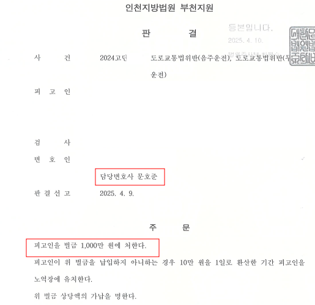
음주운전 처벌 후 2개월 만에 음주운전 및 무면허 운전으로 적발, 구공판 벌금으로 방어
의뢰인 이 사건 발생 약 2달전 음주운전으로 약식 벌금형 확정되었는바, 그럼에도 음주운전 및 무면허 운전으로 입건되었으나 벌금 방어
문호준 대표변호사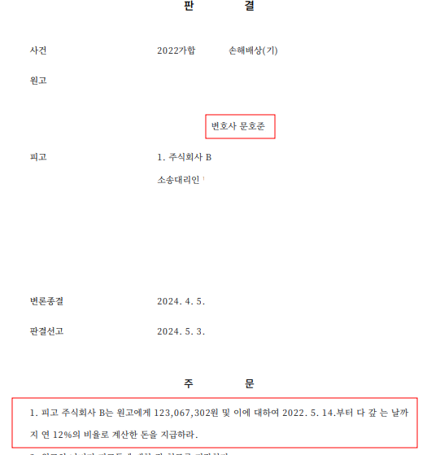
전기매트 제조물 결함으로 화재 발생, 제조물 책임 손해배상 청구 약 1억 1천만원 승소
의뢰인 전기매트를 구매하였고 사용 중 매트로 인하여 화재가 발생해 손해배상 청구함, 제조물 책임 인정 약 1억 1천만원 승소
문호준 대표변호사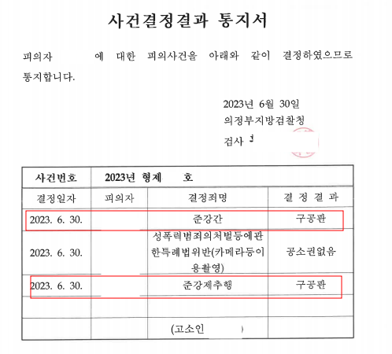
의뢰인 미성년자 시절 준강간 피해 당하여 10년 후 고소, 검찰 불기소 및 항고 기각에 재정신청 인용
의뢰인 미성년자 시절 준강간 피해 당하였고 10여 년 후 고소하였으나 검찰 불기소 및 항고 기각 하였음, 이에 재정신청 하였고 인용
문호준 대표변호사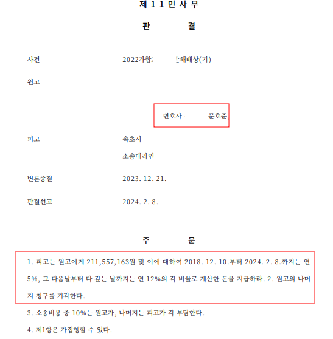
음주운전 중 경고 표지판이 없어 절벽으로 추락 사망, 책임자인 속초시에 손해배상 청구, 약 2억 1천만원 승소
망인 음주운전 중 절벽 경고 표지판이 없어 이를 알지 못하고 절벽으로 추락 사망, 도로 책임자인 속초시에 손해배상 청구 승소
문호준 대표변호사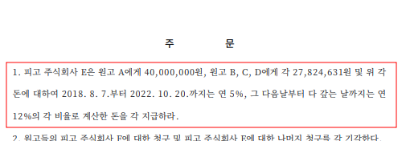
대기업 하도급 노동자 사망에 있어 실질적 사용자성 인정 받아 산재 손해배상 약 1억2천 만원 승소
망인 대기업 하도급 노동자로 근무하던 중 사망, 기업은 사용자성 부인하여 재판상 손해배상 청구하였음, 사용자성 인정 손해배상청구 인용
문호준 대표변호사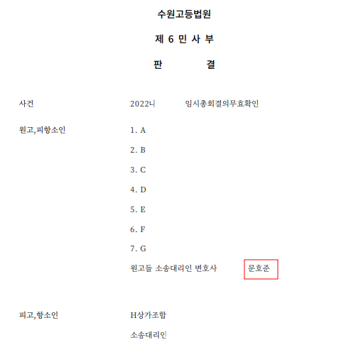
조합원으로서 조합 임시총회 무효 확인의 소, 청구 전부 인용
의뢰인 조합원으로 조합과 다툼이 있었는바, 이에 조합은 의뢰인들을 강제로 조합에서 탈퇴 시키는 총회를 개최하였음, 무효 확인 전부 승소
문호준 대표변호사
민사 증거보전 신청으로 증거 확보 후 상대방 처벌 사례
의뢰인 상대방으로 부터 폭행 당하였으나 해당 영상을 상대방이 운영하는 마트에서 보관 중, 증거보전 신청으로 증거 확보 후 고소 처벌
문호준 대표변호사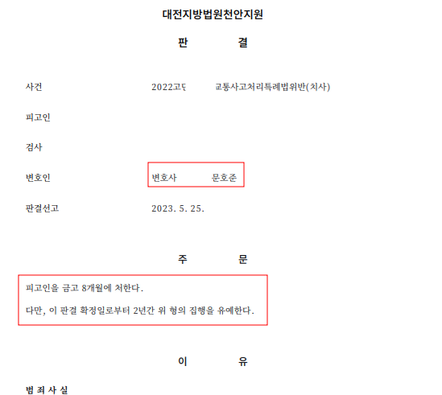
의뢰인 운전 중 조수석 지인 치사 혐의 입건, 합의 못하였지만 집행유예 방어
교통사고특례법 치사 혐의 입건, 유가족은 합의 거절하였지만 집유 방어
문호준 대표변호사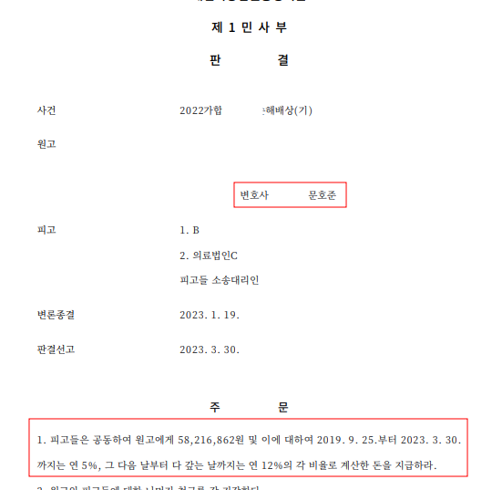
의뢰인 무릎 관절 수술 후 의사 지시대로 재활 중 넘어져 부상, 병원 상대로 손해배상 청구 약 6천만원 승소
의뢰인 병원에서 무릎 관절 수술 후 의사 지시대로 재활 중 넘어져 후유장해 발생, 병원 상대 손해배상 6천만원 승소
문호준 대표변호사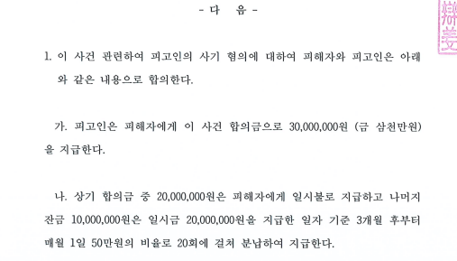
사기 피해자 의뢰인 피해 금액 전액 보전 합의
의뢰인 지인으로 부터 사기 범죄를 당하였는바, 변호인 선임 후 편취금 전액 보전 합의 성공
문호준 대표변호사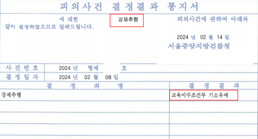
의뢰인 지하철역 인근에서 만취해 행인 강제추행 혐의 입건, 기소유예 방어
의뢰인 회사 회식 후 만취하여 지하철역에서 행인 추행, 기소유예 방어
문호준 대표변호사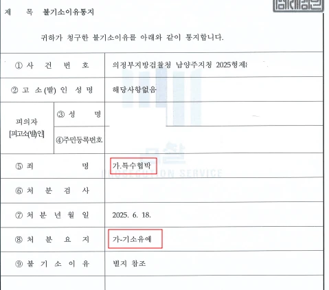
운전 중 시비가 붙어 보복운전 혐의로 입건, 기소유예 방어
의뢰인 운전 중 상대방에서 보복운전을 한 혐의로 특수협박 입건, 상대방과 합의하여 기소유예 방어
문호준 대표변호사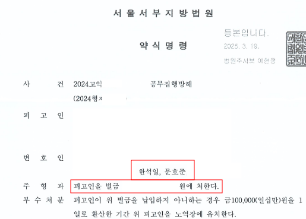
의뢰인 만취하여 번화가에서 일반인 4명을 폭행하고 출동 경찰관 2명을 폭행하여 공무집행방해 입건, 약식명령 방어
의뢰인 만취하여 번화가에서 일반인 4명을 폭행하였고 이에 신고를 받고 출동한 경찰관 2명을 추가로 폭행하여 입건되었는바, 합의 없이 약식명령 방어
문호준 대표변호사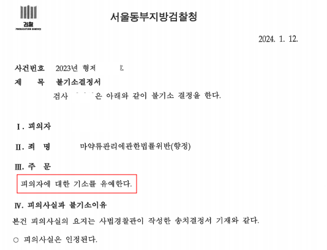
필로폰 5회 매매 및 투약 혐의 기소유예
의뢰인 필로폰 약 5회 매매 후 투약하였다는 혐의로 입건되었으나 기소유예
문호준 대표변호사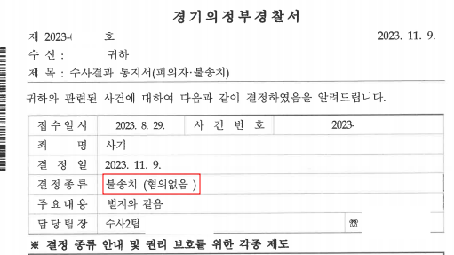
의뢰인 동대문에서 모조품 구매 후 재판매 사기 혐의 입건, 불송치 방어
의뢰인 동대문에서 모조품을 구매 후 판매하였다는 혐의로 피고소 당하였으나 불송치 방어
문호준 대표변호사
의뢰인 마약류 구매 재판 중 마약 구매 및 투약 사실로 구속영장 청구, 영장 기각 방어
의뢰인 마약류 구매 공범 재판 중 마약 구매 및 투약 혐의로 긴급체포 되어 검찰 구속영장 청구, 영장 기각
문호준 대표변호사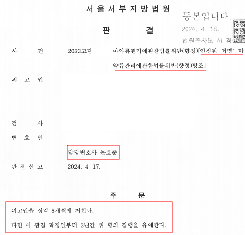
의뢰인 마약 구매 공범 지목되어 재판 넘겨졌으나 방조 혐의로 일부 무죄, 집행유예 방어
의뢰인 마약을 하던 지인의 요청대로 지인을 특정 장소에 데려다 준 사실로 마약 구매 공범 기소, 방조범으로 일부 무죄
문호준 대표변호사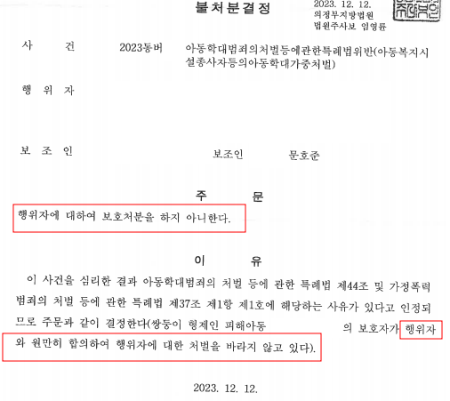
보육교사인 의뢰인 아동학대 혐의로 보호처분 재판 넘겨졌으나 불처분 결정 방어
어린이집 보육교사인 의뢰인 아동학대 혐의로 보호처분 재판 넘겨졌으나 불처분으로 방어
문호준 대표변호사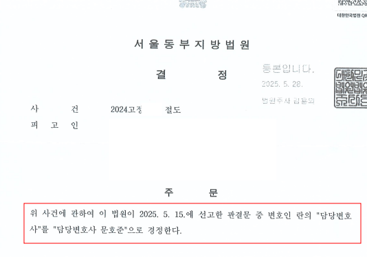
외국 기업 재직 중인 의뢰인 절도 혐의 정식재판 청구 후 선고유예 방어
의뢰인은 외국 기업에 재직 중이어서 출입국 문제로 전과 기록이 남지 않기를 원하여 선고유예 방어
문호준 대표변호사
횡령 혐의 고소에 대한 검찰 불기소 결정에 항고, 항고 인용 구공판 처분
의뢰인 해외 물품 대리구매자를 횡령으로 고소하였으나 최초 검찰 불기소 처분, 이에 항고하였고 항고 인용
문호준 대표변호사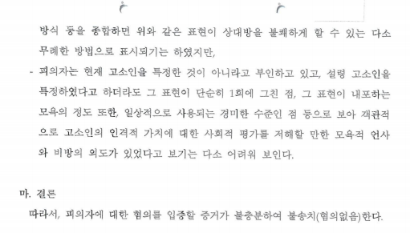
TV출연자에 대한 댓글로 모욕 혐의 피고소 불송치 방어
의뢰인 일반인 출연 연애 프로 출연자에 대한 답답한 감정을 표현하여 모욕죄 피고소, 불송치 방어
문호준 대표변호사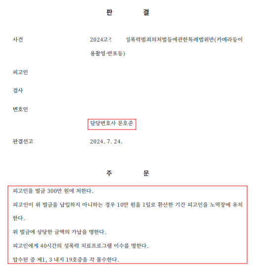
의뢰인 카메라등 이용 촬영죄로 취업제한명령 부과 되었으나 정식재판 청구 후 부가처분 제외 방어
의뢰인 카메라등 촬영죄로 취업제한 명령 부과되었으나 정식재판 청구 후 부가처분 제외 방어
문호준 대표변호사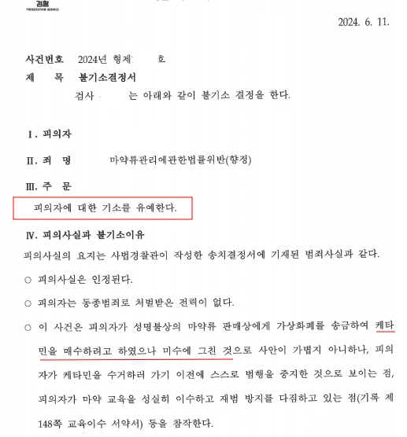
의뢰인 마약 매매 및 투약 혐의로 입건되었으나 매매 미수 1회로 방어 후 최종 기소유예
의뢰인 수사기관에 마약 매매 및 투약 혐의로 입건되었으나 최초 경찰 단계에서 매매 미수 1회로 방어 후 최종 기소유예
문호준 대표변호사
필로폰 11회 매매 및 약 30회 투약 기소유예 방어
의뢰인 필로폰을 11회 매매하고 이를 약 30회 투약한 혐의로 수사기관의 수사를 받았으나 양형자료 등 제출로 기소유예
문호준 대표변호사
음주운전 최초 측정 0.039%, 음주운전 불송치 종결 면허구제
의뢰인 음주운전 현장 적발되어 최초 0.039% 측정되었으나 '위드마크' 공식을 이용하여 0.03% 미만으로 줄여 불송치
문호준 대표변호사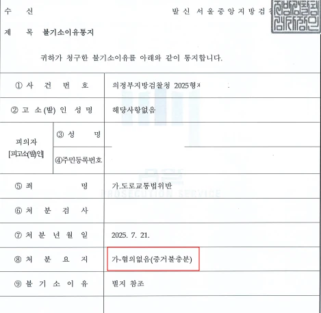
의뢰인 최초 보복운전으로 피고소 후 최종 검찰 불기소
의뢰인 최초 보복운전으로 고소 당한 후 경찰에서 난폭운전으로 변경 송치 되었으나 검찰 최종 불기소
문호준 대표변호사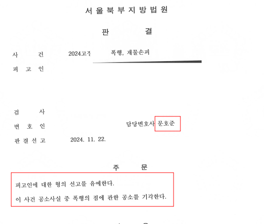
폭행 및 재물손괴로 약식명령 발부 받았으나 정식재판 청구 후 선고유예
의뢰인 폭행 및 재물손괴로 약식명령 발부 받았으나 전과를 남기지 않기 위해 정식재판 청구 후 선고유예
문호준 대표변호사
의뢰인 마약판매 상선으로 지목당하였으나 불송치 사건 종결
의뢰인 마약 혐의로 구속된 지인이 자신을 상선으로 지목하여 수사 받게 되었으나 불송치 사건 종결
문호준 대표변호사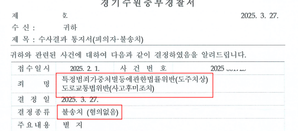
의뢰인 자동차 주행 중 자건거와 비접촉 사고 발생 뺑소니로 신고당하였으나 불송치 종결
의뢰인 자동차 주행 중 자건거와 비접촉 사고 발생하여 뺑소니로 신고당하였으나 불송치 종결
문호준 대표변호사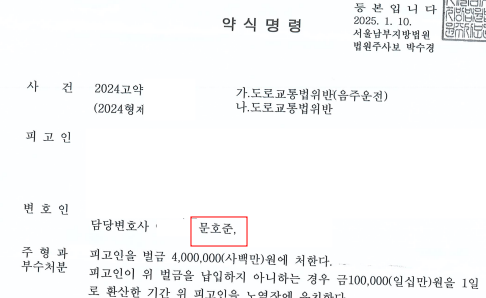
음주운전 최초 측정 0.138 수치, 수사단계에서 0.05로 낮추어 면허취소를 면허 정지로
의뢰인 음주운전 최초 0.138 측정 되어 면허 취소 위기였으나 수사기관에서 0.05로 수치 낮추어 면허 정지
문호준 대표변호사
군 부대내 동기로부터 폭행 및 모욕으로 고소당하였으나 최종 불기소 처분
의뢰인 군대 복역 중 동기로부터 폭행 및 모욕으로 고소 당하였으나 불기소 방어
문호준 대표변호사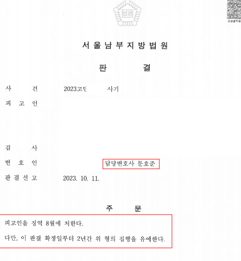
사기 범행에 있어 피해자에게 장래 지급 조건으로 합의 이끌어내 집행유예
의뢰인 형사 합의금 마련할 여력이 없었지만 피해자와 장래 지급을 조건으로 합의하여 집행유예
문호준 대표변호사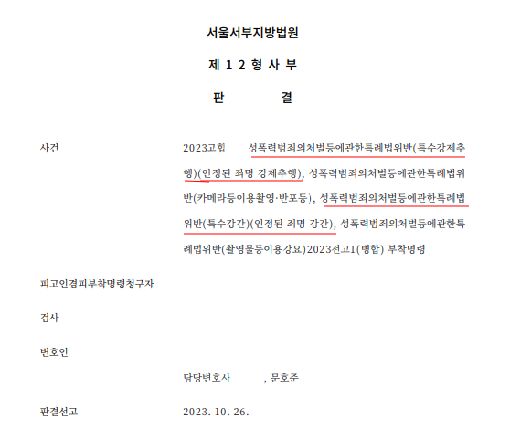
특수강간 및 촬영물 이용 협박 동종 구속 재판에 있어 일부 무죄
의뢰인 과거 특수강간 및 살인미수 등으로 10년 만기 복역 후 출소 1년여만에 동종범행 저질러 구속되었으나 일부 무죄
문호준 대표변호사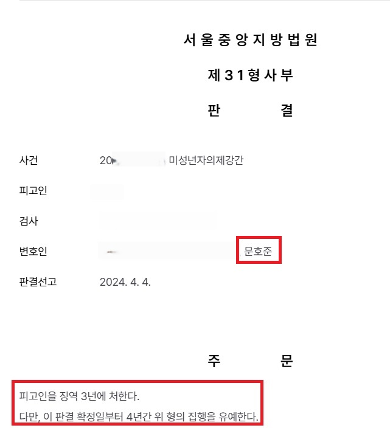
미성년자 의제 강간 혐의 피해자와 합의 없이 집행유예
의뢰인 미성년자 의제 강간 혐의로 피해자와 합의가 불발 되었으나 최종 집행유예
문호준 대표변호사
미성년자 의제강간 혐의 구속영장 기각
의뢰인 미성년자와의 성관계로 인하여 검찰에서 구속 영장을 청구하였으나 기각
문호준 대표변호사
촬영물 제공 혐의 구공판 기소 무죄
연인과 합의하에 촬영한 동영상을 자신의 카카오톡으로 전송하여 구공판 기소 된 사건
문호준 대표변호사
억울한 쌍방폭행 정식재판 청구 후 무죄
일방적 폭행임에도 억울하게 쌍방 폭행으로 약식명령 청구된 사건, 정식재판 청구 후 무죄
문호준 대표변호사※ 구체적인 사건은 사실관계에 따라 달라질 수 있습니다.